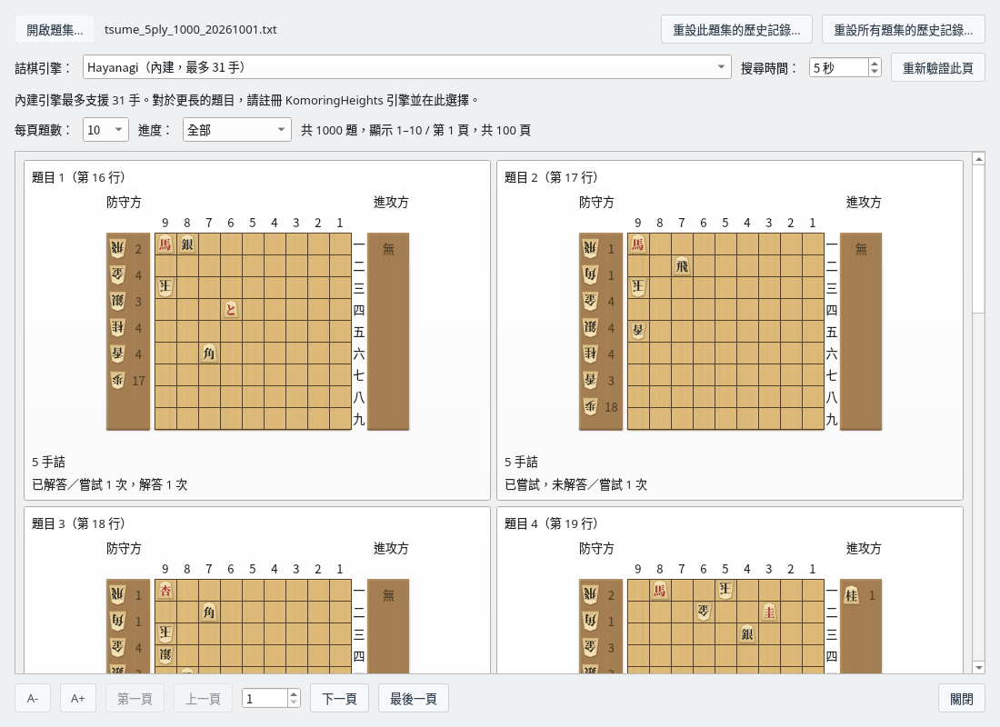
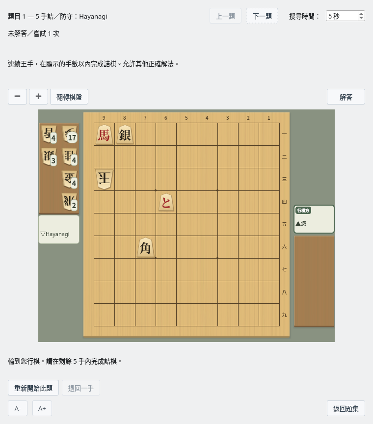
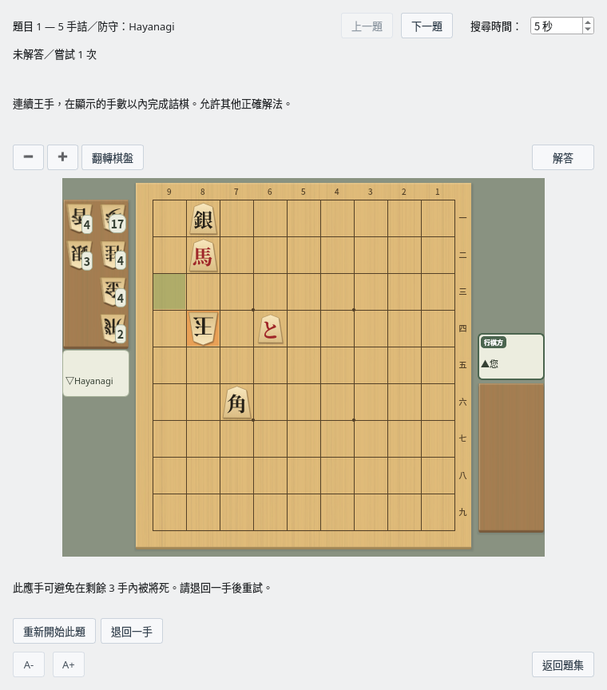
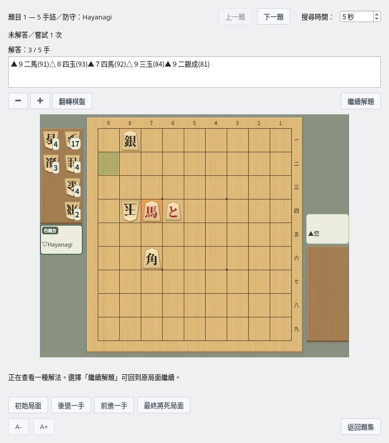

詰棋練習
選擇題目，在棋盤上解題，並回顧解答
截圖於 Linux 上以繁體中文介面擷取。
看著初始局面選擇題目
題目很多時也可以按頁瀏覽
開啟題集
選擇選單「對局」→「練習詰棋…」，會開啟「詰棋題集」。按一下「開啟題集…」，選擇每行寫有一個 SFEN 局面的文字檔案。
可以使用詰棋局面生成器（英文）儲存的題集。只含初始局面的檔案和附有參考變化的檔案都可以使用。詰棋手數採用已驗證的分析結果，不會只根據檔名或參考變化的長度來決定。
所有支援的題集都可以更快地讀取和取得歷史記錄，並重複利用分析結果。公開的 3～13 手詰、各 1000 題的題集，只要內容與應用程式中記錄的已驗證內容一致，首次開啟時也會省略詰棋手數的確認搜尋。改名或移動檔案後仍然有效，編輯內容後會恢復為一般分析。按一下「重新驗證此頁」會重新搜尋。
下載題集
我們公開了 3、5、7、9、11、13 手詰的題集（各 1000 題，共 6000 題）。Linux 版 ZIP（ShogiBoardQ-linux.zip）的 data/tsumeshogi 資料夾中已附帶。在其他環境中，請以右鍵按一下下面的連結儲存檔案。
| 手數 | 題數 | 檔案 |
|---|---|---|
| 3 手詰 | 1000 題 | tsume_3ply_1000_20261001.txt（65 KB） |
| 5 手詰 | 1000 題 | tsume_5ply_1000_20261001.txt（75 KB） |
| 7 手詰 | 1000 題 | tsume_7ply_1000_20261001.txt（86 KB） |
| 9 手詰 | 1000 題 | tsume_9ply_1000_20261001.txt（97 KB） |
| 11 手詰 | 1000 題 | tsume_11ply_1000_20261001.txt（108 KB） |
| 13 手詰 | 1000 題 | tsume_13ply_1000_20261001.txt（120 KB） |
均為 2026 年 10 月 1 日版（增加了持駒剩餘檢查並替換題目的新版），是 UTF-8 文字檔案。製作和驗證的詳情請參閱題集說明（README，日文）。
查看初始局面、手數和歷史記錄
每道題的卡片上顯示初始棋盤和持駒、題號、詰棋手數以及嘗試狀況。每頁題數可從 10、20、50、100 中選擇。可以用「上一頁」「下一頁」或頁碼移動，即使是 1000 題的題集也能分批挑選。
可以依「全部」「未嘗試」「已嘗試，未解答」「已解答」篩選，找到想練習的題目。按一下題目的卡片即可進入練習畫面。

題集：看著初始局面和詰棋手數選擇要挑戰的題目（5 手詰題集）
選擇詰棋引擎和搜尋時間
使用內建的 Hayanagi 不需額外註冊引擎。初始局面的詰棋判定最多 31 手。對於長手數的題目，請另行準備 komori-n 開發並公開的詰棋引擎KomoringHeights，在「設定」→「引擎設定…」中註冊，然後在題集畫面的「詰棋引擎」中選擇。註冊方法請參閱引擎註冊指南。
即使選擇 KomoringHeights，作為防守方下應手的仍是 Hayanagi。KomoringHeights 用於判定是否能將死。也可以使用 101 手等長手數的題目，但需要在限定時間內完成判定。
「搜尋時間」可設定為 1～600 秒。如果因逾時等原因顯示「未確定」，請增加時間後按一下「重新驗證此頁」。已確認無詰的題目無法開始練習。
以 Hayanagi 為防守方在棋盤上解題
連續王手，在顯示的手數以內將死
移動攻方的棋子
由您擔任攻方。依序按一下棋子和目標位置，或拖曳棋子來走子。也可以打入持駒，並選擇升變或不升變。走出正確的王手後，防守方會下應手，然後又輪到您。
判定的依據不只是是否與參考變化一致，而是能否在顯示的剩餘手數以內將死。成立的其他解法也會被視為正確。

練習畫面：您是攻方，Hayanagi 是防守方。一邊確認剩餘手數一邊走子
看到防守方的逃脫應手後重新思考
如果走出無法將死的王手，防守方會在棋盤上下出防止將死的應手。為了讓您看清應手，約 1 秒後才顯示結果。會區分「完全無法將死」和「剩餘手數以內無法將死」兩種情況。
按一下「退回一手」可回到自己上一步之前，嘗試別的著法。不是王手的著法和犯規著法不會被接受。搜尋逾時時不會判為錯誤，可以按一下「重試搜尋」重新驗證。

確認逃脫應手和判定結果，退回一手後再挑戰
| 操作 | 作用 |
|---|---|
| 重新開始此題 | 回到初始局面，開始新的嘗試。 |
| 退回一手 | 回到自己上一步之前的局面。 |
| 停止搜尋・重試搜尋 | 搜尋中顯示「停止搜尋」，可以重新判定時顯示「重試搜尋」。也可以增加搜尋時間後再驗證。 |
| 上一題・下一題 | 不返回題集，依篩選後的順序移動到相鄰的題目。在練習畫面中修改的搜尋時間會沿用。 |
| 返回題集 | 回到題集原來的頁面和篩選條件。 |
逐手回放解答
確認解法後，可以回到中途的練習
按一下「解答」按鈕，棋盤上方的說明文字會變為棋譜和回放手數，棋盤下方的「重新開始此題」「退回一手」會切換為回放按鈕。按一下與「解答」同一位置的「繼續解題」即可恢復練習。切換前後棋盤和共通按鈕的位置不變。可以從初始局面檢視一種經過驗證的解法，較長的棋譜可以捲動閱讀，也可以複製。

解答：對照棋譜和棋盤，逐手回放攻方和防守方的著法
| 回放按鈕 | 操作 |
|---|---|
| 初始局面 | 顯示解答的初始局面。 |
| 後退一手・前進一手 | 逐手後退或前進攻方、防守方的著法。 |
| 最終將死局面 | 顯示解答最後的局面。 |
| 繼續解題 | 隱藏棋譜和回放按鈕，從回放前的練習局面繼續。 |
回放期間只能檢視棋盤，不能走子推進練習。僅回放不會增加嘗試次數和解答次數。取得解答需要時間時，可以用「停止搜尋」或「繼續解題」中斷。
保留嘗試歷史，反覆練習
未嘗試的題目和以前解過的題目都能找到
- 儲存嘗試次數、解答次數、上次嘗試時間和上次解答時間。關閉應用程式後歷史記錄仍會保留。
- 只是瀏覽題集或等待自動判定不會增加嘗試次數。進入練習畫面並可以走子時，記為一次嘗試。
- 重新挑戰以前解答過的題目時，即使失敗或中斷，過去的已解答狀態也會保留。
- 只要是同一局面，即使檔名或儲存位置改變，歷史記錄也會沿用。
- 按一下題集上方的「重設此題集的歷史記錄…」，可將目前題集的全部題目恢復為未嘗試。與頁面和篩選條件無關，全部題目都是對象。同一局面也出現在其他題集中時，共享的歷史記錄也會被重設。
- 按一下「重設所有題集的歷史記錄…」，可將以前開啟過的所有題集恢復為未嘗試。兩種重設都會顯示確認畫面，並刪除嘗試、解答次數和時間。重設無法復原。
歷史記錄儲存在與 ShogiBoardQ 設定檔不同的資料庫中。發布版不需另外安裝 SQLite 即可儲存歷史記錄。
調整為易於檢視的大小和方向
文字和棋盤的大小可以分別變更
| 操作 | 變更的內容 |
|---|---|
| A−・A＋ | 縮小或放大題集畫面和練習畫面的文字。每個畫面分別儲存。 |
| 棋盤上方的「−」「＋」 | 縮小或放大練習畫面的棋盤。 |
| Ctrl＋滑鼠滾輪 | 在棋盤上捲動滾輪調整棋盤大小。 |
| 翻轉棋盤 | 將棋盤旋轉 180 度。翻轉後也可以走子和回放解答。 |
棋盤大小和翻轉狀態下次會沿用。
自己出題的方法請參閱詰棋局面生成器（英文），從一般對局局面尋找詰棋的方法請參閱搜尋詰棋（英文）。